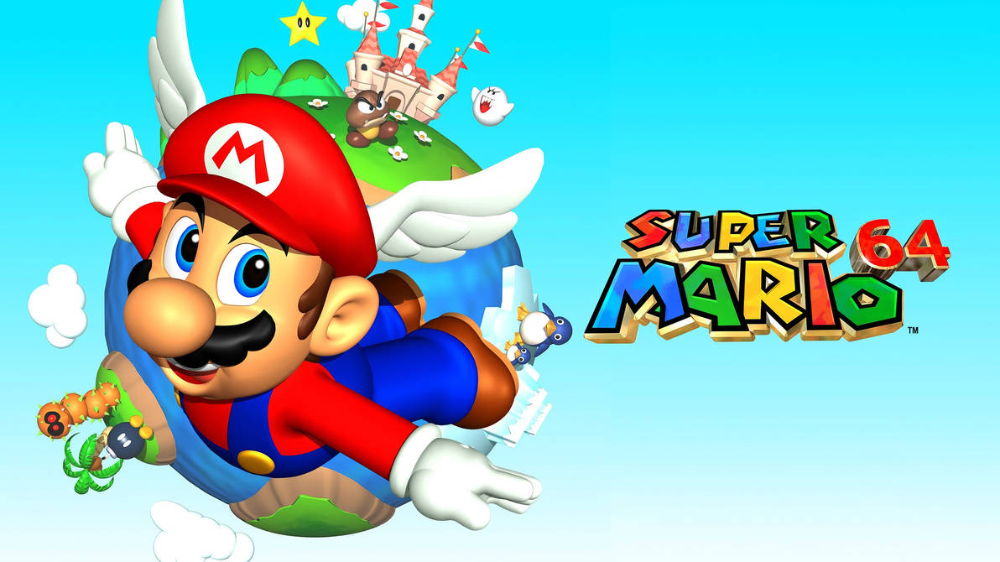
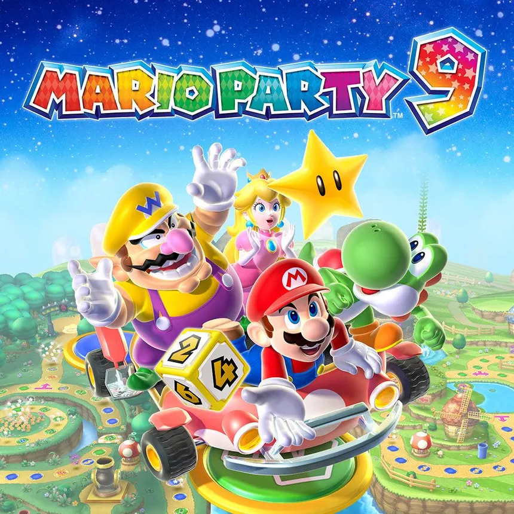

Juegos clásicos

Son los juegos que siguen la fórmula de los primeros títulos: juegos de plataformas en 2D en los que debes llegar a la bandera situada al final del nivel. Hoy en día, este tipo de juegos resulta especialmente nostálgico para la mayoría de los jugadores.
Juegos en 3D
En la época de Nintendo 64, Nintendo optó por probar un nuevo tipo de videojuego que resultó revolucionario para su tiempo: los videojuegos en tres dimensiones. Así nació Super Mario 64 en 1996. En la actualidad, siguen desarrollándose entregas en 3D como Super Mario Galaxy, Super Mario Odyssey, Super Mario 3D World, entre otros.
Otros
Nintendo no solo se ha limitado a desarrollar entregas en 3D, sino que también ha experimentado con otros géneros, como los juegos deportivos, los juegos de tablero y muchos más.